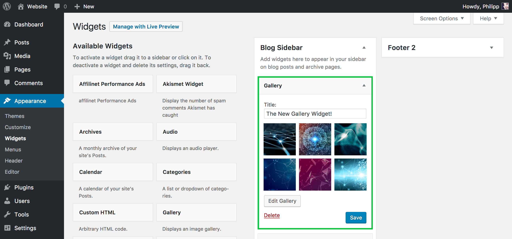

ACERCA DE DOCKER
Docker es un proyecto de código abierto que automatiza el despliegue de aplicaciones dentro de contenedores de software, proporcionando una capa adicional de abstracción y automatización de virtualización de aplicaciones en múltiples sistemas operativos.2 Docker utiliza características de aislamiento de recursos del kernel Linux, tales como cgroups y espacios de nombres (namespaces) para permitir que "contenedores" independientes se ejecuten dentro de una sola instancia de Linux, evitando la sobrecarga de iniciar y mantener máquinas virtuales.3
PASOS PARA INSTALAR DOCKER
Para poder instalar docker en ubuntu se requiere de una serie de pasos, el problema para realizar esta instalacion es la falta de trabajo en OS libres como lo es ubuntu, esto hizo que la tarea de instalar docker se volviera algo dificil al principio. Pero una vez logrado puedes darte cuenta que enrealidad no es nada del otro mundo.
- *Primero actualizamos los paquetes apt
- sudo apt-get update
- *Luego instalamos los paquetes que permitiran a apt utilizar repositorios HTTP
- sudo apt-get install apt-transport-https ca-certificates curl software-properties-common
- *Agregamos el GPG KEY Oficial de Docker
- curl -fsSL https://download.docker.com/linux/ubuntu/gpg | sudo apt-key add -
- *Con el siguiente codigo configuramos el repositorio stable de Docker
- sudo add-apt-repository "deb [arch=amd64] https://download.docker.com/linux/ubuntu $(lsb_release -cs) stable"
- *Actualizamos nuevamente los paquetes apt
- sudo apt-get update
- *Finalmente instalamos docker-ce
- sudo apt-get install docker-ce
Ahora que instalamos docker podemos crear contenedores
- *Contenedor de MySQL
- docker run --name mysql -e MYSQL_ROOT_PASSWORD=123456 -d mysql
- *Contenedor de WORDPRESS
- docker run --name wordpress --link mysql:mysql -p 8080:80 -d wordpress
WORDPRESS
Ahora que instalamos el contenedor de wordpress solo hace falta ir a la direccion de nuestra pagina y configurar wordpress normalmente
